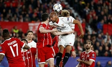
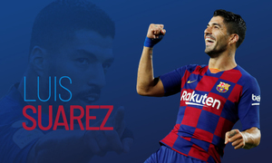
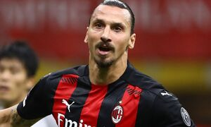
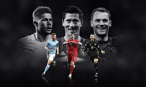
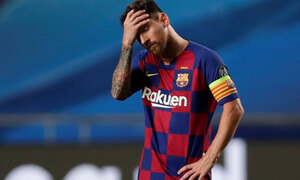
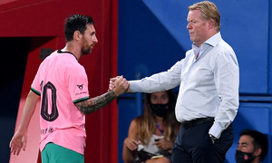
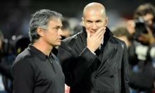

-

Cả hai đội tranh Siêu Cup Châu Âu 2020 hôm nay đều sở hữu chuỗi trận bất bại kéo dài từ trước Covid-19.
-

Ghi 198 bàn và giành 13 danh hiệu, Luis Suarez trở thành một trong những trung phong hay nhất lịch sử Barca, trước khi gia nhập Atletico Madrid hè này.
-

Trang chủ AC Milan xác nhận tiền đạo Zlatan Ibrahimovic dương tính với virus, ngay trước thềm trận gặp Bodo/Glimt ở vòng loại thứ ba Europa League.
-

De Bruyne, Lewandowski và Neuer đứng trước cơ hội giành giải Cầu thủ hay nhất của UEFA, khi Messi và Ronaldo lần đầu cùng vắng mặt sau 10 năm.
-

Cựu tuyển thủ Argentina, Claudio Caniggia cho rằng Lionel Messi thiếu phẩm chất thủ lĩnh và thường không thể hiện được tài năng thiên bẩm mỗi khi Barca lâm vào thế bí.
-

Johan Cruyff rời cương vị HLV trưởng Barca năm 1996 và xa cõi tạm từ 2016 nhưng di sản của ông còn đó và góp phần mang lại thành tựu vĩ đại cho nhiều HLV kế tục ở Nou Camp. Nhưng giờ, Barca phải nghĩ đến những đổi thay.
-

HLV Jose Mourinho cho rằng thương vụ Gareth Bale làm các bên đều hạnh phúc, trong đó có đồng nghiệp Zinedine Zidane.